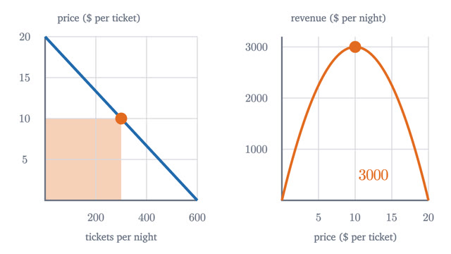
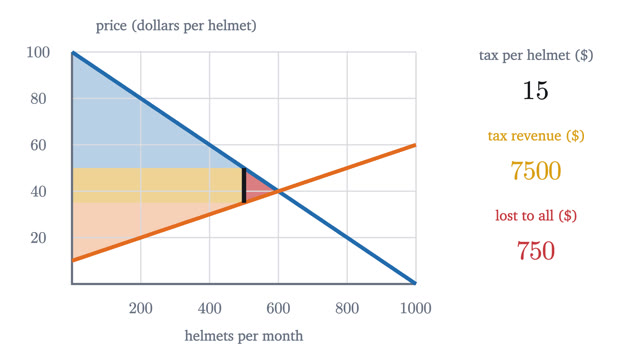
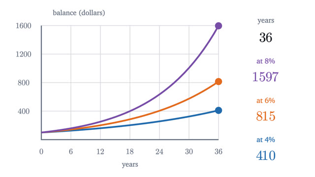
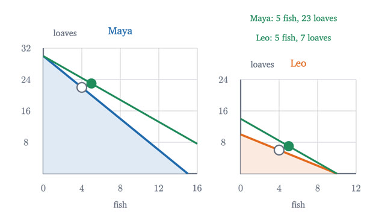
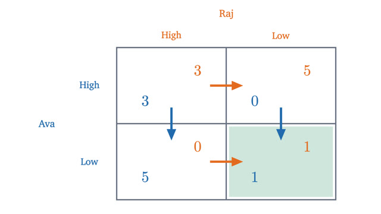

Economics
Prices, margins, trade and strategy, read off the graphs.
The first four lessons build the model of a market: supply and demand, how strongly buyers respond to price, decisions at the margin, and what a tax costs. The last three stand more on their own: money over time, why trade benefits both sides, and what happens when each person's best choice depends on the other's.
Start with lesson 1-
1
Supply and demand: where a price comes fromLine up buyers by what they would pay and sellers by what they would accept. The price where the two counts match is the one that leaves nobody turned away.

-
2
Elasticity: when raising the price lowers revenueRevenue is a rectangle under the demand curve. Elasticity compares percentage changes in quantity and price, and decides whether a price rise grows it.

-
3
Thinking at the margin: marginal cost and revenueThe right question is what one more unit adds to revenue and to cost. Why averages mislead, why sunk costs drop out, and why profit peaks where MR meets MC.

-
4
Consumer surplus, and what a tax destroysMeasure what a market is worth to its buyers and sellers, then tax it. Some of the loss reaches nobody, and who bears the rest depends on slopes, not the law.

-
5
Compound interest and the time value of moneyWhy a dollar today is worth more than a dollar later, how to price future payments, and where the rule of 72 and the mortgage formula come from.

-
6
Comparative advantage: why trade helps both sidesSomeone who is better at everything still gains by trading with someone who is worse at everything. Opportunity cost explains why, and a short proof shows when.

-
7
The prisoner's dilemma and Nash equilibriumHow to read a payoff table, find best responses and Nash equilibria, mix strategies when no cell is stable, and see why repeated play can sustain cooperation.
